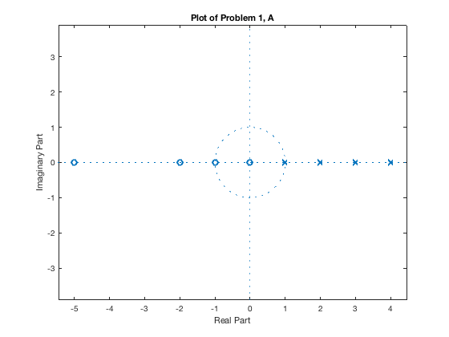
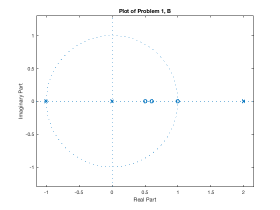
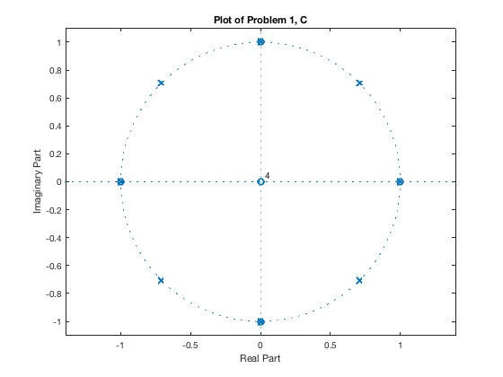

Contents
Lab 1 Jesse Layman SID: 861135479
Problem 1
z1_a = roots([2 16 34 20 0])
p1_a = roots([1 -10 35 -50 24])
g1_a = 2/1
G1_a = zpk(z1_a,p1_a,g1_a)
z1_b = roots([10 -21 14 -3])
p1_b = roots([3 -3 -6 0])
g1_b = 10/3
G1_b = zpk(z1_b,p1_b,g1_b)
z1_c = roots([1 0 0 0 -1 0 0 0 0])
p1_c = roots([1 0 0 0 0 0 0 0 -1])
g1_c = 1/1
G1_c = zpk(z1_c,p1_c,g1_c)
z1_a =
0
-5.0000
-2.0000
-1.0000
p1_a =
4.0000
3.0000
2.0000
1.0000
g1_a =
2
G1_a =
2 s (s+5) (s+2) (s+1)
-----------------------
(s-4) (s-3) (s-2) (s-1)
Continuous-time zero/pole/gain model.
z1_b =
1.0000
0.6000
0.5000
p1_b =
0
2
-1
g1_b =
3.3333
G1_b =
3.3333 (s-1) (s-0.6) (s-0.5)
----------------------------
s (s-2) (s+1)
Continuous-time zero/pole/gain model.
z1_c =
0.0000 + 0.0000i
0.0000 + 0.0000i
0.0000 + 0.0000i
0.0000 + 0.0000i
-1.0000 + 0.0000i
0.0000 + 1.0000i
0.0000 - 1.0000i
1.0000 + 0.0000i
p1_c =
-1.0000 + 0.0000i
-0.7071 + 0.7071i
-0.7071 - 0.7071i
0.0000 + 1.0000i
0.0000 - 1.0000i
1.0000 + 0.0000i
0.7071 + 0.7071i
0.7071 - 0.7071i
g1_c =
1
G1_c =
s^4 (s+1) (s-1) (s^2 + 1)
-----------------------------------------------------------
(s+1) (s-1) (s^2 + 1.414s + 1) (s^2 - 1.414s + 1) (s^2 + 1)
Continuous-time zero/pole/gain model.
Problem 2
z2_a = poly([5 -4 1])
p2_a = poly([6 -13 -2])
g2_a = 8
G = tf(g2_a*z2_a,p2_a)
j=sqrt(-1);
z2_b = poly([2 1+j 1-j])
p2_b = poly([3 -1 -j j])
g2_b = 2
G = tf(g2_b*z2_b,p2_b)
z2_c = poly([-1 1 -j j])
p2_c = poly([0 3])
g2_c = -3
G = tf(g2_c*z2_c,p2_c)
z2_a =
1 -2 -19 20
p2_a =
1 9 -64 -156
g2_a =
8
G =
8 s^3 - 16 s^2 - 152 s + 160
----------------------------
s^3 + 9 s^2 - 64 s - 156
Continuous-time transfer function.
z2_b =
1 -4 6 -4
p2_b =
1 -2 -2 -2 -3
g2_b =
2
G =
2 s^3 - 8 s^2 + 12 s - 8
-----------------------------
s^4 - 2 s^3 - 2 s^2 - 2 s - 3
Continuous-time transfer function.
z2_c =
1 0 0 0 -1
p2_c =
1 -3 0
g2_c =
-3
G =
-3 s^4 + 3
----------
s^2 - 3 s
Continuous-time transfer function.
Problem 3
n_a = [4 0 -4]
d_a = [1 -3 0]
[r,p,k] = residue(n_a,d_a)
n_b = [1 0 0 1]
d_b = [1 0 1]
[r,p,k] = residue(n_b,d_b)
n_a =
4 0 -4
d_a =
1 -3 0
r =
10.6667
1.3333
p =
3
0
k =
4
n_b =
1 0 0 1
d_b =
1 0 1
r =
-0.5000 - 0.5000i
-0.5000 + 0.5000i
p =
0.0000 + 1.0000i
0.0000 - 1.0000i
k =
1 0
Problem 4
figure
zplaneplot(z1_a,p1_a)
title('Plot of Problem 1, A')
figure
zplaneplot(z1_b,p1_b)
title('Plot of Problem 1, B')
figure
zplaneplot(z1_c,p1_c)
title('Plot of Problem 1, C')
ans =
Line with properties:
Color: [0 0.4470 0.7410]
LineStyle: 'none'
LineWidth: 0.5000
Marker: 'o'
MarkerSize: 7
MarkerFaceColor: 'none'
XData: [0 -5.0000 -2.0000 -1.0000]
YData: [1.0000e-50 1.0000e-50 1.0000e-50 1.0000e-50]
ZData: [1×0 double]
Use GET to show all properties
ans =
Line with properties:
Color: [0 0.4470 0.7410]
LineStyle: 'none'
LineWidth: 0.5000
Marker: 'o'
MarkerSize: 7
MarkerFaceColor: 'none'
XData: [1.0000 0.6000 0.5000]
YData: [1.0000e-50 1.0000e-50 1.0000e-50]
ZData: [1×0 double]
Use GET to show all properties
ans =
Line with properties:
Color: [0 0.4470 0.7410]
LineStyle: 'none'
LineWidth: 0.5000
Marker: 'o'
MarkerSize: 7
MarkerFaceColor: 'none'
XData: [0 0 0 0 -1.0000 8.3267e-17 8.3267e-17 1.0000]
YData: [0 0 0 0 0 1.0000 -1.0000 0]
ZData: [1×0 double]
Use GET to show all properties
  